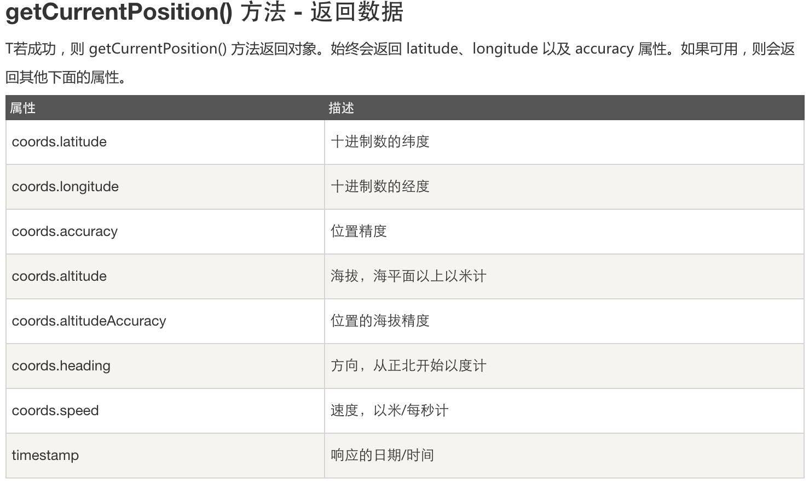

定位用户的位置
HTML5 Geolocation API 用于获得用户的地理位置。
鉴于该特性可能侵犯用户的隐私，除非用户同意，否则用户位置信息是不可用的
使用地理定位
使用 getCurrentPosition() 方法来获取用户的位置(包括经度和纬度)
点击按钮获取您当前坐标(可能需要较长时间:
在地图中显示结果
返回数据

watchPosition
watchPosition() -返回用户的当前位置，并继续返回用户移动时的更新位置（就像汽车上的 GPS）。
clearWatch() - 停止 watchPosition() 方法
获取持续位置: